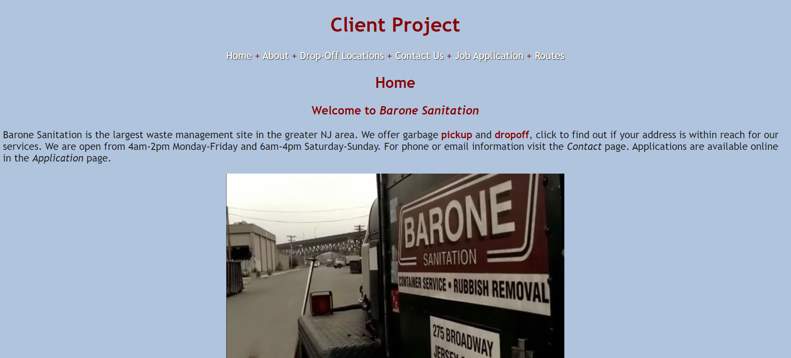

Review 2 - Cage Jennings
- Page leads to correct page to be reviewd.
- Page has no spaces or uppercases in file/folder names.
- Design:
- Page has good contrast.
- Page has good site colors and font colors along with CSS contained in seperate file.
- CRAP:
- Site has good contrast between text and background colors.
- Site has good repitition across site pages in terms of color usage and site components.
- Site has good alignment for the most part. I personally think that the P elements on the home page should have more margin as it makes the site look very busy near the top but not as much as you go down.
- Proximity is good but I would put the navbar in some sort of box but if that conflicts with design choices, it is not necessary.
- Page includes a header, main, and footer
- Site has brand name within an H1
- Main starts with page title as H2
- There is a tagline with a slogan
- Page does not have footer with validation although the disability validation does not seem to show the image for the validator